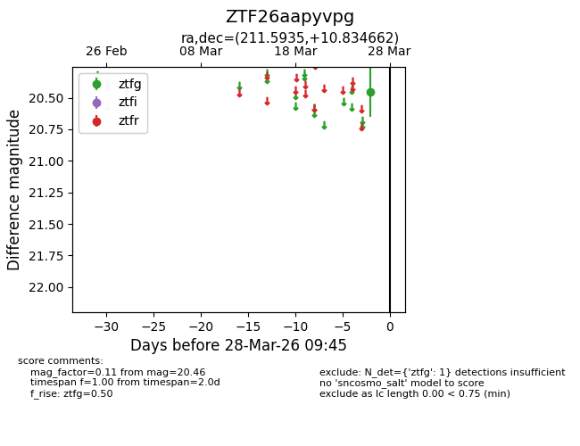
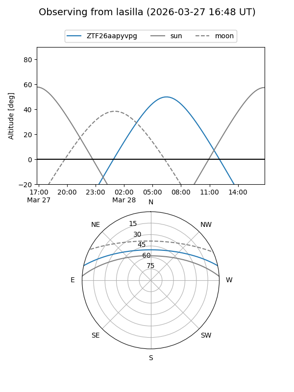
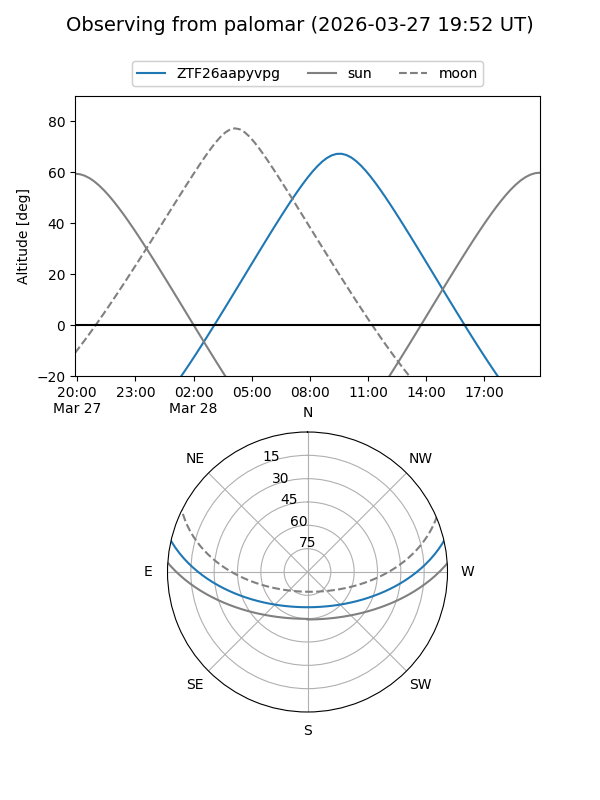

ZTF26aapyvpg
Target ZTF26aapyvpg at 2026-03-28 09:48
Aliases and brokers:
FINK: link
Lasair: link
ALeRCE: link
alt names
ZTF26aapyvpg (ztf,fink_ztf)
Coordinates:
equatorial (ra, dec) = 211.5935,+10.83466
equatorial (HMS+DMS) = 14:06:22.43,+10:50:04.78
galactic (l, b) = (353.7802,+65.99720)
Flags:
Photometry:
last ztfg=20.46
1 ztfg detections
Lightcurve

Visibility


Additional plots